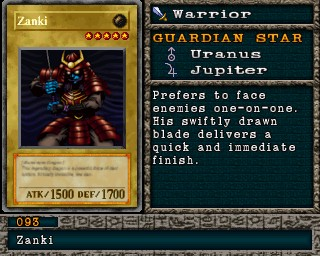

#093 · Monstro
Zanki
ATK1500
DEF1700
Nível5
TipoGuerreiro
AtributoEarth
Guardian StarsUrano / Júpiter
Senha30090452
Star Chips260
Quem dropa no Mod 13
| Duelista | Rank | Chance | Média | |
|---|---|---|---|---|
| S/A-POW | 3,61% 74/2048 | 1 em 28 duelos | ||
| S/A-TEC | 3,42% 70/2048 | 1 em 29 duelos | ||
| B/C/D | 1,95% 40/2048 | 1 em 51 duelos | ||
| B/C/D | 1,86% 38/2048 | 1 em 54 duelos | ||
| High Mage Secmeton | B/C/D | 1,71% 35/2048 | 1 em 59 duelos | |
| S/A-POW | 1,56% 32/2048 | 1 em 64 duelos | ||
| High Mage Secmeton | S/A-POW | 1,22% 25/2048 | 1 em 82 duelos | |
| B/C/D | 0,88% 18/2048 | 1 em 114 duelos | ||
| S/A-POW | 0,78% 16/2048 | 1 em 128 duelos | ||
| S/A-TEC | 0,59% 12/2048 | 1 em 171 duelos |
Quem dropa no jogo original
| Duelista | Rank | Chance | Média | |
|---|---|---|---|---|
| B/C/D | 3,71% 76/2048 | 1 em 27 duelos | ||
| S/A-POW | 3,61% 74/2048 | 1 em 28 duelos | ||
| S/A-TEC | 3,42% 70/2048 | 1 em 29 duelos | ||
| B/C/D | 1,95% 40/2048 | 1 em 51 duelos | ||
| High Mage Secmeton | B/C/D | 1,71% 35/2048 | 1 em 59 duelos | |
| S/A-POW | 1,56% 32/2048 | 1 em 64 duelos | ||
| High Mage Secmeton | S/A-POW | 1,22% 25/2048 | 1 em 82 duelos | |
| B/C/D | 0,88% 18/2048 | 1 em 114 duelos | ||
| S/A-POW | 0,78% 16/2048 | 1 em 128 duelos | ||
| S/A-TEC | 0,59% 12/2048 | 1 em 171 duelos |
A chance vale por duelo vencido com o rank indicado. "1 em N" é a média de duelos para conseguir a carta. S/A-POW = vitória por força; S/A-TEC = vitória técnica; B/C/D = ranks baixos.